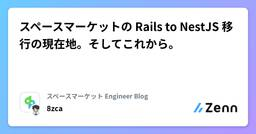

スペースマーケット Engineer Blogのフィード
https://zenn.dev/p/spacemarket
スペースを簡単に貸し借りできるサービス「スペースマーケット」のエンジニアによる公式ブログです。 弊社採用技術スタックはこちら -> https://www.whatweuse.dev/company/spacemarket
フィード
振り返りの習慣を作る
スペースマーケット Engineer Blogのフィード
はじめにこんにちは。WebエンジニアのShotaです！最近、「毎日の振り返りを習慣にしたいのに、なかなか続かないな」と悩むことがありました。フォーマットを決めても書き忘れてしまったり、何を書けばいいか迷って手が止まってしまったり。そんな中で、効果的な振り返りのやり方や、無理なく続けるためのテクニックをいくつか学びました。この記事では、実践しやすく効果的な振り返り方法と、習慣化するためのコツをご紹介します。「振り返りを続けたいけどうまくいかない」と感じている方のヒントになれば嬉しいです。 なぜ振り返りが続かなかったのか弊社ではスクラム開発を採用しており、チーム内で週に...
1日前

スペースマーケットの Rails to NestJS 移行の現在地。そしてこれから。 1
1
スペースマーケット Engineer Blogのフィード
私たちスペースマーケットが4年前から進めている 「Ruby on Rails から NestJS への移行プロジェクト」。一時期、その進捗は残念ながら進んでいるとは言えない状態でした。過去の登壇や採用資料でも「NestJS へ技術スタックを移行中です」と発信してきておりました。https://speakerdeck.com/spacemarket/engineer?slide=37その裏側では、日に日に重くなる技術的負債と、進まない移行への静かな焦りが渦巻いていたのです。この4年間、私たちの開発現場で一体何があったのか。そして、一度は止まった歯車が、なぜ今、再び力強く回り始め...
3日前

ジュニアエンジニアなら“AI駆動開発は設計が9割” ─ 出戻りゼロの実践手法 4
スペースマーケット Engineer Blogのフィード
はじめにこんにちは、スペースマーケットでインターン中のジュニアエンジニア、akipaint です。「AIでコードを書く」ことが当たり前になりつつある今日この頃。特に生成AIを使った開発手法──いわゆるAI駆動開発は、個人開発や実務問わず急速に広がっています。僕自身、インターンや個人開発を通してAIと一緒にコードを書いています。しかし、そんな中でこんな疑問にぶつかります。「このコード、本当に使って大丈夫？」「どこまでAIに任せていいんだろう？」「AIで爆速開発！…のはずが、出戻りばかりしてる…」そこで今回は、僕が実践している「ジュニアエンジニアにこそ必要なAIの正...
3日前

Startpage - プライベート検索エンジンis何
スペースマーケット Engineer Blogのフィード
おはようございます、こんにちは、こんばんは。スペースマーケットでWebエンジニアをしています、s0arです。あついそんなクソ暑い今日このごろ、皆様いかがおググりでしょうか？今日も元気にYahooでググってますか？それともBingですか？最近はAIに聞いちゃうって方も多いんじゃないでしょうか？自分も結構AIに聞いちゃうことが増えました。とはいえ検索エンジンを使う機会がゼロになったわけではないと思います。そんな検索エンジンについてのお話。マジでなんとなく、まったく理由なく、最近検索エンジンを Google → DuckDuckGo → StartPage と乗り換えました。...
14日前
CLIでも簡単Podman
スペースマーケット Engineer Blogのフィード
おはようございます、こんにちは、こんばんは。スペースマーケットでWebエンジニアをしているs0arです。これからの時期にとても助かりそうな飲み物を見つけました。カロリーゼロってことは無限に飲んでいいってことですよね。助かる。死ぬ気で飲もうと思います。 Podmanはいいぞおじさん、WSL2でもPodmanを使いたくなる前にPodman Desktopの記事書いたので読んでください。Podmanはいいぞ。Podman Desktopの導入マジで簡単です。苦し紛れに記事書いたんですけど中身ゼロに等しいです。それぐらい簡単です。マジです。簡単すぎて涙出るね。そんなPo...
24日前
Github Copilot × Github MCP Server試してみた
スペースマーケット Engineer Blogのフィード
はじめにこんにちは。スペースマーケットでWebエンジニアしてます、dumbled0reです。業務で一つの機能を新しいリポジトリに移行していたのですが、既存の仕様やコード検索をリポジトリをまたいで簡単に出来たら便利だと思い、Githubが提供しているMCPサーバを試してみました。 GitHub MCP Serverとは今回使用するのはこちらのGithubが提供しているMCPサーバで、PRの作成・マージ、Issueの作成・更新、コード検索などが行えます。https://github.com/github/github-mcp-server?utm_source=chatgpt...
1ヶ月前
【Day.js】React+Day.jsで作成するレンジ版カレンダーコンポーネント
スペースマーケット Engineer Blogのフィード
こんにちは！スペースマーケットでフロントエンドエンジニアをしているwharaguchiです。前回カレンダーコンポーネント単体の作り方を紹介したところ、社内で「開始日と終了日を選択できるレンジ版はどう作るの？」と質問をいただいたので、今回はレンジ版のカレンダーコンポーネントを作成してみました！前回の記事は以下です。https://zenn.dev/spacemarket/articles/caee5ddd8a8937今回の記事も前回の記事と同じ構成で進めていきます。 今回のゴールまず、今回のゴールは、前回作成したカレンダーコンポーネントを元に、以下の仕様を追加したものを作成...
1ヶ月前
スペースマーケットiOSアプリの残Objective-Cコードを約3年かけてSwift化した話
スペースマーケット Engineer Blogのフィード
こんにちは、スペースマーケットでモバイルエンジニアをしている村田です。先日のWWDC25「Liquid Glass」の発表で世のiOSエンジニアが沸く中、我々のエンジニアチームは2025年6月16日ついにObjective-Cの撲滅を完了し、盛り上がっていました！昨今Objective-Cのコードが残っているプロジェクトは少ないかもしれませんが、入社してから約3年かけて取り組んできたSwift化の歩みを紹介することで、同じように移行に取り組んでいる方の励みや参考になれば嬉しいです。 スペースマーケットゲストiOSアプリの歴史 提供開始10年前の2015年6月30日、スペー...
1ヶ月前
AIの今とこれからから考える、エンジニアが動くべきチャンス
スペースマーケット Engineer Blogのフィード
2017年、元OpenAIの共同創業者であり、元テスラのAIディレクターでもある Andrej Karpathy は、自身のブログ記事で、「Software 2.0」という概念を提唱しました。彼の主張はこうです——「ソフトウェア開発とは、コードを書くことではなくなる。大量のデータを準備し、ニューラルネットワークを訓練することが、新しい“プログラミング”になる。」この考えは、当時としては新鮮で挑戦的でしたが、それからわずか数年で、私たちはさらにその先へと進んでいます。今年2月、Karpathyは再び、新しい人気キーワードを生み出しました。それが 「Vibe Coding」です。...
1ヶ月前
GASを使ってX（旧Twitter）に定期自動投稿してみた
スペースマーケット Engineer Blogのフィード
はじめにこんにちは。スペースマーケットでWebエンジニアをしているmotimoti63です。梅雨が明けて本格的な暑さがやってきましたが、皆さんちゃんと汗をかいてますか？最近、夏バテしないように筋トレを再開しました。というのも、下腹や横腹の脂肪が気になり始めたからです……。夏にナガスパに行く予定なので、それまでに「魅せる筋肉」を鍛えています。さて、本題です。最近、X（旧Twitter）で技術発信や情報収集をしようと思ったのですが、業務の合間に、みなさんが一番見てくれる時間帯である朝7時〜8時、夜7時〜8時に毎回ポストするのがなかなか大変で……。「どうせなら自動で投稿できたら...
1ヶ月前
Devin's Machineのsetupでつまづいた
スペースマーケット Engineer Blogのフィード
こんにちは！スペースマーケットのrokioです。DevinでDevin's Machineのセットアップをしているときに、The repository commands encountered an error or failed to complete within the time limit.というエラーに遭遇したので、その対処法を共有します！ 遭遇したエラーセットアップを開始すると以下のような画面になります：設定をして、Finishをクリックすると...エラー文が出て、セットアップを完了できませんでしたThe repository commands enc...
1ヶ月前
UI実装で遭遇する“あるあるバグ”とその解決方法
スペースマーケット Engineer Blogのフィード
こんにちは。みなさんUI実装していますか？実際のプロダクトでは小さなUI改善が多く、凝ったレイアウトや大規模なUI実装をすることはあまりないのではないでしょうか？今回私も久しぶりに業務で大規模なデザインリニューアル作業を行い特定のブラウザでだけ起こるバグやCSSの罠に悩まされました。なので、開発中に遭遇したUIバグとその時に取った解決方法をまとめたTIPS集を紹介します。 SafariでSVGがぼやける 現象<img src="xxx.svg"> でSVGを読み込んだところ、Safariでだけ画像がぼやけて表示される。期待する状態とぼやける状態を比べてみま...
1ヶ月前
【Terraform】FastlyのログをDatadogに送る
スペースマーケット Engineer Blogのフィード
こんにちは。株式会社スペースマーケットでWebエンジニアをしていますwado63と申します。最近LLMの性能が高まり、簡単な問題解決であればChatGPTなどに聞けば一発で解決してくれるので、ブログが書きづらくなったなと感じている今日このごろです。今回のケースも『terraformでfastlyのvclを管理しているのですが、datadogにログを連携するにはどうすればいいでしょうか。』とか聞けば8割ぐらいの精度の回答が返ってきます。とはいえつまづくところもあったのでその辺含めてまとめてみました。前提として、DatadogやFastlyのアカウントはすでに作成済み、Fastlyは...
1ヶ月前
Cursor x Claude Code = Vibes Coding = 俺いる...?🤔になった話。
スペースマーケット Engineer Blogのフィード
はじめに初めまして！株式会社スペースマーケットで内定者インターンに参加させていただいている、h4luです！最近、技術トレンドを追うためにオンラインイベントにちょこちょこ参加してまして、そこでAIエージェント、Cursorに関するイベントに参加しました。それがすごい刺激になりAIもっと触ってみたいなぁと思ってた時に、Claude CodeがProプランで使えてしまうというニュースも飛び込んできました。そういえば巷で噂のバイブコーディングやったことないなぁと思い簡単なAIアシスタントを作成してみましたので、その感想や得た学びを記事に起こそうと思います。この記事では、実際にAI...
1ヶ月前
【TypeScript】[1, 'a', 2] はどうして (string | number)[] になるの？
スペースマーケット Engineer Blogのフィード
最近社内で Effective TypeScript 第2版 を輪読しているのですが、型推論の話や型の拡大(widening)についての説明を読んでいて、「普段当たり前に使っている型推論ってどう動いているんだっけ？」とふと思い立ちました。TypeScriptコンパイラのネイティブ実装のニュースも記憶に新しいですが、気になったことは調べてみよう🕵️♀️ という気持ちで、TypeScriptの心臓部である checker.ts の世界へ旅立つことにしました。今回のゴールは、以下のコードがどのように (string | number)[] と解釈されるかを調べることです。const v...
1ヶ月前
SwiftUI標準のWebViewが出たので使ってみた
スペースマーケット Engineer Blogのフィード
はじめにこんにちは、スペースマーケットでモバイルアプリの開発をしている王です。最近やっているタスクが佳境になったり、登壇で色々準備したりでやや忙しくなりました。つい先日のWWDC2025を見まして、WebKit for SwiftUIで紹介されたSwiftUIのWebViewがちょっと気になったので使ってみました！ これまでの話まず今回の標準WebViewが出る前に、SwiftUIでどうやってWebViewを表示するか簡単に振り返ってみようと思います。struct WebView: UIViewRepresentable { let url: String ...
1ヶ月前
B/Gデプロイでバージョンを上げたDBを切り戻す際に、DMSのレプリケーションを試してみた
スペースマーケット Engineer Blogのフィード
こんにちは！僕が所属してるチームでは、DBのアップデート対応を行っています。まだ本番では対応できていないですが、DMSのレプリケーション機能を使った切り戻し方法をリハーサルで使ってみたので、手順や使ってみた所感をまとめていきたいなと思います。今回アップデートするDBの環境です。対象エンジンバージョン現状Aurora MySQL(5.7)2.11.2アップデート後Aurora MySQL 3.08.2(compatible with MySQL 8.0.40) 背景データベースをB/Gデプロイでアップグレードした際に、万が一元のバージョンに戻...
2ヶ月前
BigQueryで「今から3ヶ月前より後」のデータを取得する
スペースマーケット Engineer Blogのフィード
どうも！スペースマーケットのrokioです！BigQueryで「今から3ヶ月前より後」という条件でクエリを書きたくなり、そこで色々考えたので記事にしてみます！ 「3ヶ月前」の定義今日が2025/6/15だとしたら、3ヶ月前とは何日のことでしょうか？(a) 月の部分だけ-3した、2025/3/15でしょうか？(b) それともざっくりと30 x 3 = 90日前でしょうか？3/15は6/15の92日前です。要件は状況によって異なると思いますので、上記2パターン(a)(b)を実現するクエリをそれぞれ考えることにします。 前提以下の前提で話を進めます。us...
2ヶ月前
Context7 MCPで実現する最新ドキュメント参照術
スペースマーケット Engineer Blogのフィード
はじめまして！スペースマーケットのjinです🤓Windsurf、Cursor、GitHub CopilotなどのAI付きIDEをお使いの皆さん、@Docs機能は活用されていますか？便利な機能ではあるものの、個人的には@Docsを使っても古いライブラリの情報が出力されたり、ハルシネーション（事実とは異なる情報の生成）が発生したりすることがありました。また、その都度参照してほしいドキュメントを指定するのも、少し手間に感じていました。今回は、これらの課題解決の助けとなる「Context7」というMCPをご紹介します。 Context7 MCPとは？Context7 MCPは、A...
2ヶ月前
Next.js + ClerkでログインしたユーザーをRailsバックエンドで認証・検証する方法
スペースマーケット Engineer Blogのフィード
初めまして！スペースマーケットでインターンをしている@aki_apintです！今回は、Next.js × Clerk のログインは簡単にできたけど、「Rails側で、Clerkユーザーってどう取得するの？」って話。個人開発で使っている Next.js + Clerk + Rails の構成。フロントのClerkは一瞬で導入できたのに、バックエンドのRailsとどうつなぐかでめちゃくちゃハマりました。同じように「Clerk、簡単そうなのにRailsとどう連携するの？」と悩んでいる人に向けて、連携の仕組みと、実際に僕が実装した構成をまとめました！少しでも助けになれれば嬉しい...
2ヶ月前